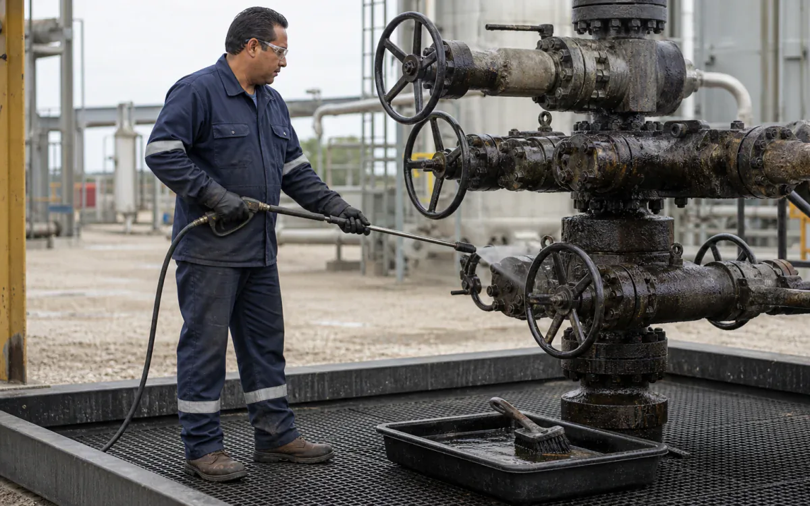
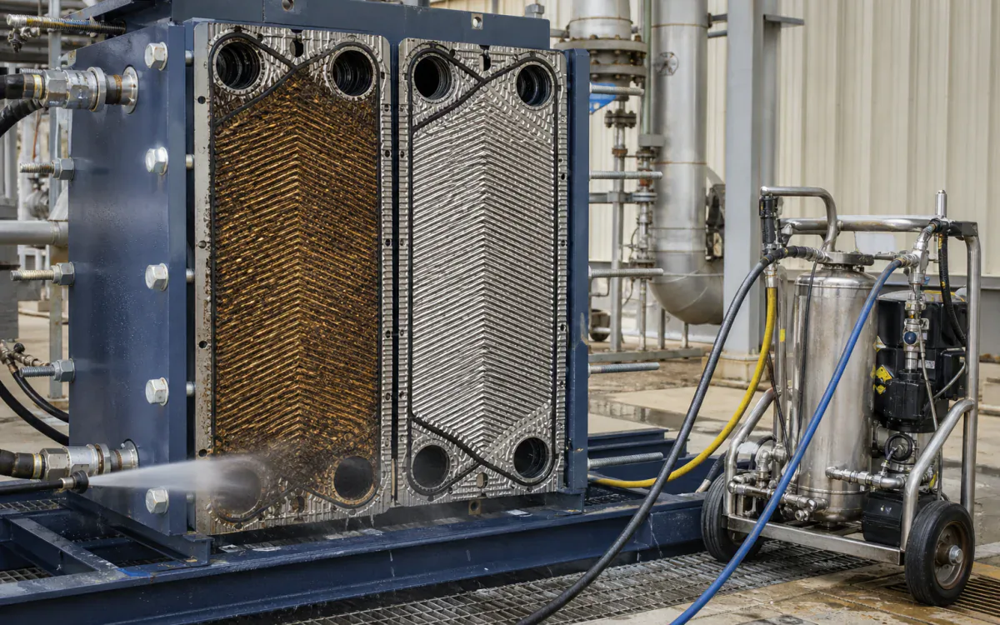

Clean rigs and terminals without making the chemical the main hazard.
Scope descaling, derusting, and degreasing around metallurgy, containment, ventilation, discharge, and the current product documents.
- CleanTanks, heat exchangers, separators, pipe spools, pumps, valves, rig equipment, containment floors, and vehicle components
- RemoveCrude and refined hydrocarbon film, grease, drilling residue, carbon, iron oxide, carbonate scale, and mixed deposits
- MethodDe-inventory and gas-free, remove bulk product, controlled degrease or circulate descaler, recover, rinse, and inspect
- BoundaryPermit to work, LOTO/blinding, gas testing, confined-space control, ignition control, materials review, and spill containment are prerequisites.
- Open task controls and documents
Why VertKleen fits Oil, Gas & Process Plants.
Rigs, terminals, and pipelines need separate controls for scale, rust, hydrocarbon soil, metallurgy, containment, and discharge. Start with the current SDS, then confirm concentration, wet dwell, agitation, rinse, and endpoint in a controlled trial.
Review available evidenceWhat Oil, Gas & Process Plants buyers need documented first.
Hydrochloric acid (muriatic acid), solvent degreasers, and aggressive rust removers used on rigs, terminals, pipeline parts, and tank-farm equipment.
Bundle: HCR for rust and passivation, Descaler for mineral scale, CR HD for oily soils, Neutral for sensitive surfaces.
Generated scenes illustrate tasks. Owner-confirmed field photos remain public context; only records completing the verification checklist are treated as field proof.




VertKleen products for Oil, Gas & Process Plants.
VertKleen options for Oil, Gas & Process Plants workflows.
Remove hydrocarbon soil and mineral deposit from de-inventoried rigs, terminals, and process-support assets.
Task controls first. Product choice follows the asset, deposit, materials, operating window, and discharge route.
- Task
- Remove hydrocarbon soil and mineral deposit from de-inventoried rigs, terminals, and process-support assets.
- Asset / substrate
- Tanks, heat exchangers, separators, pipe spools, pumps, valves, rig equipment, containment floors, and vehicle components
- Soil / deposit
- Crude and refined hydrocarbon film, grease, drilling residue, carbon, iron oxide, carbonate scale, and mixed deposits
- Starting chemistry
- VertKleen CIP HCR, VertKleen Descaler, VertKleen CR HD, VertKleen Neutral
- Concentration
- Select within the current label/TDS range from deposit analysis, metallurgy, soil load, and a contained field trial.
- Process controls
- Log LEL/O2 status, solution temperature, concentration, dwell, flow or mechanical agitation, rinse/recovery volume, pH, and waste profile.
- Shutdown / containment
- Permit to work, LOTO/blinding, gas testing, confined-space control, ignition control, materials review, and spill containment are prerequisites.
- Verification endpoint
- Gas-free status maintained, no visible/free oil, white-wipe or specified cleanliness, recovered flow/pressure drop, and acceptable rinse endpoint.
Request SDS/TDS access or open the current public application file.
Registered users can request safety and technical sheets for staff review. Confirm revision, product identity, material compatibility, and application scope before site approval.
Bring us your Oil, Gas & Process Plants cleaning task.
The request opens with asset, soil, operating conditions, materials, wastewater route, and buying deadline already prompted.